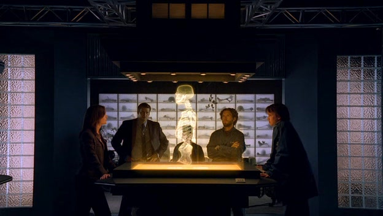

Running from 2005 to 2017, the popular crime procedural show Bones has given insight into forensic anthropology to its viewers. Each of the 246 episodes follows an FBI agent, Seeley Booth, and a forensic anthropologist, Dr. Temperance “Bones" Brennan, on an FBI case. Dr. Brennan is the protagonist in the show, as well as the leader of a team of anthropologists and archeologists at the Jeffersonian Institute Medico-Legal Lab.
The TV show Bones demonstrates a number of police procedures, including interviews and interrogations, carrying out search warrants, and arrests. However, throughout all of this, one element of the show sticks out prominently. Dr. Brennan is not a police officer, nor does she have the jurisdiction to perform any of the procedures listed above. Despite this, Brennan can be found carrying out interviews, interrogations, and accompanying the FBI on searches. It should be noted that role of a forensic anthropologist is to; assist with recovery of human remains, clean bones for examining, establish biological profiles (including age-at-death and sex), work with other specialists to match dental records, estimate time since death, and testify in court about evidence on the skeleton. In the pilot episode, Dr. Brennan is allowed into a house as it is being searched by the police, even though there is no need for her to be there in terms of her job.
Dr. Brennan also assists Agent Booth in many interviews and interrogations throughout the season. Forensic anthropologists wouldn’t ordinarily be involved with the policing side of the cases that they work on. On a few occasions, Dr. Brennan is seen alone in the interview room with suspects, asking questions and attempting to gather evidence.
Like many crime shows, Bones uses common elements of mystery fiction to create a story. All episodes include the elements of crime, trails of clues, foreshadowing, and an abundance of red herrings to keep the audience engaged.
Bones, like many other crime and detective TV shows, demonstrates expensive, fast-tracked technology and procedures. However, in Bones, care was taken by Kathy Reichs, a former forensic anthropologist, and co-producer of the show, to make everything as realistic as possible. The pilot episode of the series introduces us to a holographic 3D reconstruction apparatus (shown right) that almost instantaneously provided a picture of the victim’s face and body. In a 2012 interview with NPR (National Public Radio, America), Reichs stated “it’s a three-dimensional holographic reconstruction apparatus, and it does exist. Now, have I ever been in a crime or medical legal lab that has one? No. It’s [too] expensive.” So whilst liberties were taken in the show, like making the machine work instantaneously and almost perfectly, efforts were made to make technology, such as this, at least somewhat realistic.
Another example of fast-tracked, futuristic technology, is the unrealistic quality of zoom and image enhancement. Used somewhat selectively throughout the show and referred to as “image polarisation”, the investigative team is able to zoom in on images and maintain the image quality using this technology. A good example of this is in episode 5 of the first season, where an image form a shopping centre security camera is able to be zoomed in on and enhanced to be very high quality. The issue of image size and pixelation is actually brought up by the forensic artist, Angela, but a work around is created using the futuristic technology.
The show also demonstrates fast-tracked technology with automatic digital processes for identifying suspects and victims. In episode 4 of the first season, advanced technology and AI is used to piece together a tattoo, based off of three small pieces of skin. The technology searched the entire police database (of which the anthropologist team should never have had access to), to find a person to match the pieced together tattoo.
From unsafe handling of firearms, to over dramatisation of normally monotonous processes, and incredibly fast timelines for solving crimes, Bones provides an unrealistic template for what policing and forensic investigations is like in real life. The pilot episode opens with a scene in an airport, where we meet the protagonist, Dr. Temperance "Bones" Brennan. Dr. Brennan surprises the audience with a human skull, still covered in tissue, inside her carry-on bag. This is unrealistic in that human remains wouldn’t legally be able to be transported in that way, and that the skull, which is evidence, may be damaged if not packaged correctly. It also posses a biohazard, as the skull was not clean and still had soft tissue.
Kathy Reichs, a producer on the show and a forensic anthropologist herself, stated that “what’s different [in the show] is that in real life every single case does not get solved.” Referring to how, in Bones, all cases that are taken on by the forensic team, in association with the FBI and other law enforcement agencies, are solved, despite the challenges that present. In real life, not all evidence would carry DNA, particularly after submersion.
The role of a forensic anthropologist, in real life, is much narrower than that presented in the show. Generally, an anthropologist doesn’t run DNA tests, collect trace evidence (such as hair and fibres), or match dental records without the input of a forensic odontologist (dentist). In the show, the forensic anthropologists are shown doing all of the above, without the assistance or guidance of a person who is trained specifically for the role.
As with other crime TV shows, Bones, has unrealistically fast times for processing evidence and closing a case. Most cases presented only last a couple of days to a week. In the show, DNA is processed excessively fast, from a just a number of minutes to a couple of hours. This is aided by the show’s fast-tracked technology. In comparison, processing DNA in real-life would ordinarily take around 50 hours of work, or 5-6 working days.
Despite the show accurately reflecting some procedures, especially those related to biological profiling (“an individual’s identifying characteristics and trauma on skeleton that may aid identification”), some procedures are not. For example, making assumptions about the ethnicity of a victim is problematic for forensic anthropologist, particularly in society today (see this article). Overall, the accuracy of both the police and forensic sides of the show become increasingly less accurate as it progresses, presenting more unrealistic procedures, situations, and timelines.
I personally think that this TV show is entertaining, if not a bit far-fetched. It likely contributes to the CSI effect, demonstrating unrealistic standards of the police and forensic processes. Despite not being a law enforcement agent herself, Dr. Brennan does just as much, if not more, investigative and police work as Agent Booth. Overall, I enjoyed the show, and would give it 4 out of 5 stars.